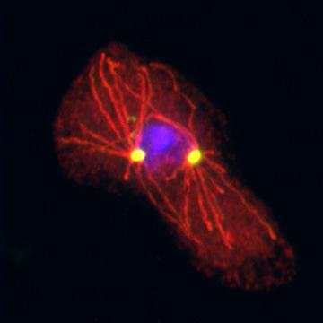
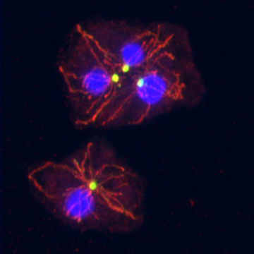
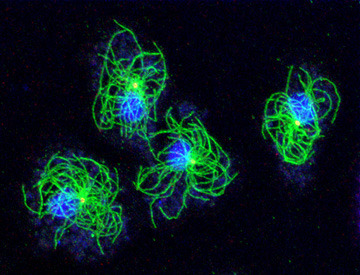
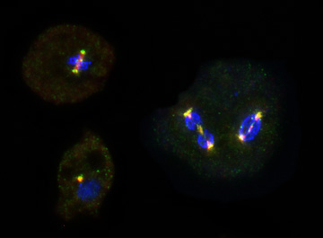

Click on an image to get a full sized picture
|
 Centrosome and microtubule-labeled cell1. |
 Centrosome and microtubule-labeled cells1. |
|
 Centrosome and microtubule-labeled cells2. |
 Nuclei, centrosome, spindle poles and centromere-labeled cells in different cell cycle stages3. |
1. Confocal microscopy of glutaraldehyde fixed cells overexpressing the centrosomal and microtubule-associated protein DdCP224 as a GFP fusion protein. As shown in the upper left, these cells often have supernumerary, nucleus-associated or cytosolic centrosomes. The GFP-DdCP224-labeled centrosome appears yellow, microtubules stained with anti-tubulin antibodies and secondary Cy3-conjugated antibodies are shown in red and TOPRO-3-stained nuclei are displayed in blue (Graef et al., 2000).
2. Immunofluorescence deconvolution microscopy of Dictyostelium amoebae fixed with glutaraldehyde and stained with the monoclonal antibodies YL1/2 against alpha-tubulin (green) and 2/165 against DdCP224 to stain the centrosome (red channel; appears yellow due to colocalization with tubulin). The strict association of the centrosome with nuclei (blue; stained with DAPI) and the radial array of microtubules that extents to the cell cortex where it interacts with the actin cytoskeleton.
3. Immunofluorescence deconvolution microscopy of Dictyostelium amoebae fixed with glutaraldehyde and stained with the monoclonal antibody 2/165 against DdCP224 (red channel) and anti-TACC directed against the TACC protein (green channel). The image shows three cells in interphase (lower left), metaphase (upper left) and anaphase (right). Colocalization (yellow) of the two proteins at centrosomes, spindle poles and the centromere and midbody region becomes clearly apparent. Nuclei were stained with DAPI (blue). The interaction of both proteins has been shown by Koch and coworkers (Koch et al., 2006).
Permission is hereby granted to use these images for any non-commercial use, such as inclusion in web pages, presentations, and reports.